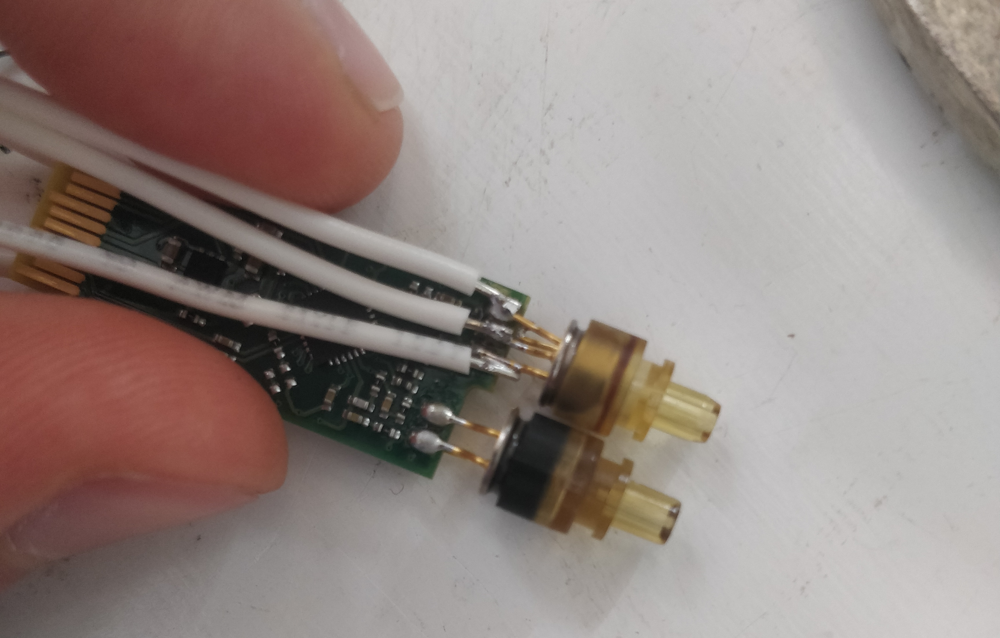
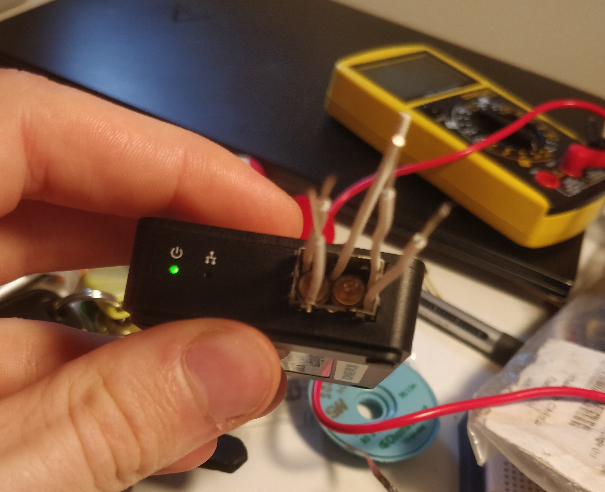
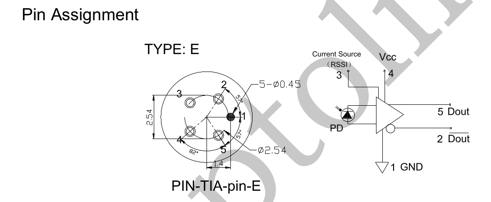
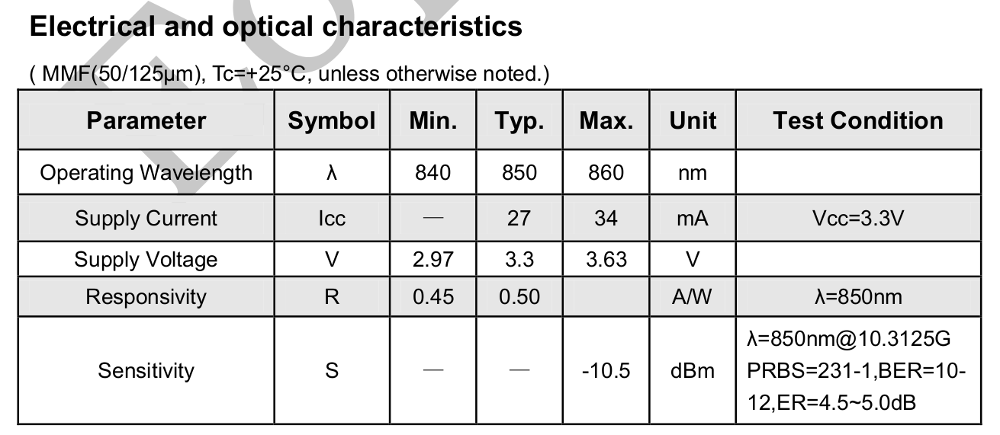
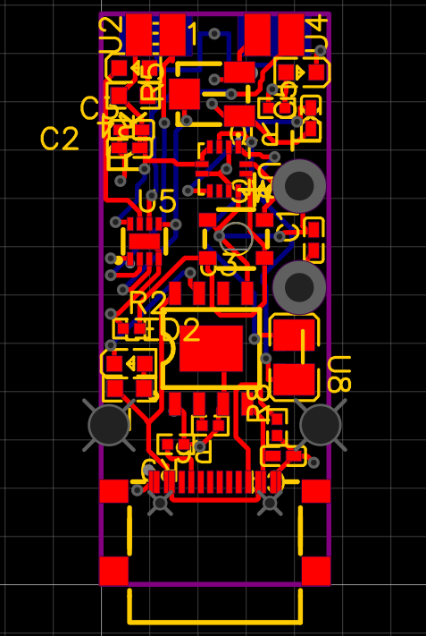
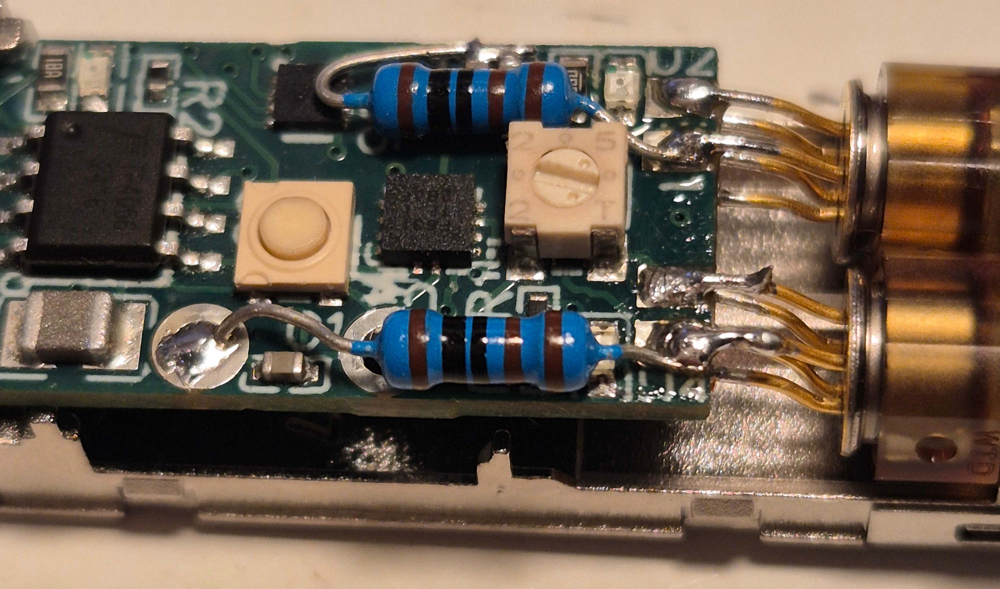

Fibre optic connections are often comprised of two parts, RX and TX. Experience from site has shown that these are swapped about 50% of the time. A somewhat frustrating problem to diagnose, especially when you have 100s of connections per site. The usual method of testing, requires undoing the fragile plastic clip, swapping the cores around, testing again to see if it works. This can take a minute or two and risks breaking the fibre or the plastic clip. In many cases, this also doesn't work as there is another issue in the connection, so you have to swap it back. A good solution would allow someone to quickly distinguish whether a lack of comms meant an RX/TX swap or a different issue entirely.
You can find SFPs for relatively cheap online, my work had some broken spare ones that I could use. They contain a laser and a sensor to detect that laser, called a Recieving Optical Sub-Assembly (ROSA). If we could put two of those sensors next to each other, we can plug in the LC connector and see which core the TX signal is on. The ROSA will work well as a sensor in this application as it is very sensitive and already tuned to the required wavelength.
In order to develop an electrical design and assess the Viability of the idea, I needed to find out what voltage the sensor required an what it's output looked like. The best way seemed to be directly measure them off a working SFP board. To do this, I soldered some wires directly onto the ROSA pins (see below).
There was access to all of the ROSA module pins, which mean the input/output voltages could be measured with a multimeter. The SFP was plugged into my fibreoptic to USB converter to power it on with access to the wires.
The required input voltage is 3.3v with a current of about 40mA. The voltage of one of the pins responded to a laser stimulus, reaching approximately 1.7V.
I later found a pinout schematic that showed the pinout, and the operating characterstics of a ROSA, which seemed to correspond with the pinout from the one I had.
 With confirmation that the ROSAs could be used for this application, I put together a schematic. I used EasyEDA for it's integration with JLCPCB's assembly and board printing. Note the following features that make use easier.
Ideally the board could fit into the original case from an SFP. This would give it a small form factor, while maintaining the ability to plug in an LC connector. Additionally, I wanted it to be battery powered, with a USB-C port for easy recharge. If the battery was small enough, it could fit below the PCB but still within the SFP case.
To keep the costs down, I used mostly JLCPCB basic parts, on a single sided, 4 layer design. This mean I spent quite a bit of time cramming all the components together in the small form factor, after several tries everything could fit into one board wich cost a totoal of $47 AUD which included surface mounting.
In the schematic design, I didn't realise that the ROSA produces a current instead of a voltage, so initially both LEDs showed at the same time with nothing plugged in. This could be solved postumously with the addition of two pulldown resistors soldered between the output pins and ground (see below).
The device works! Here the demonstration shows when the TX core is plugged into the correct port, a green light shows. When plugged into the wrong port, a red light shows. If there is a light on neither side, it shows there is no light being received. If the battery is out of charge, it can be powered entirely off an external USB supply.